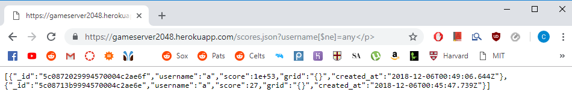
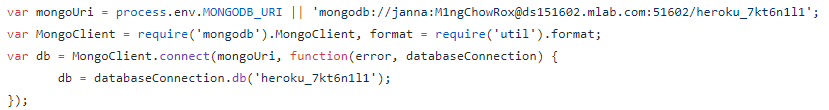
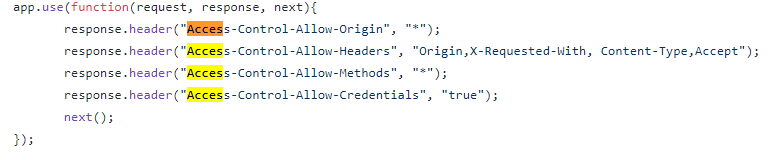

Assignment 4: Security and Privacy Assessment of Assignment 3
Introduction
The product in this assignment is the submitted assignment 3 of a peer, Janna Sokolow. This assignment was a modified client-side 2048 game coupled with a server-side game center highscore tracker. There are several security and privacy vulnerabilities in this code and I was hired to document and resolve these issues.
Methodology
During this assessment, I used various inputs to attempt to expose potential security and privacy vulnerabilities, including unrestricted database access and cross-site scripting (XSS). To do this, I used my browser and the cURL tool.
Abstract of Findings
During this security investigation, several flaws were revealed which gave the user access to information that they should not have. These flaws include cross site scripting, query injections, and hard coded database credentials.
Issues Found
Issue 1:
Query Injection
Location:
server.js -> /scores.json line 121
Severity:
Low: I would argue that this threat isn't much of an issue right now because the hacker is able to access other scores and items in the database which usually could be seen anyway on the highscores. HOWEVER, this issue could become medium or large if there is sensitive information added in the database.
Description
This issue can be exposed simply using the browser. By going to :
"https://gameserver2048.herokuapp.com/scores.json?username[$ne]=ANY" on a browser, all of the elements within the database that are not "ANY" will be shown to to the user.
Proof of Vulnerability

Once this specific address is accessed, you can see data on the page that the user should not have access to.
Resolution
You can use more strict input validation to ensure that the users query will not grant the user this access. For example, a validation library could be used tso that
Source
Issue 2:
Hard-Coded Credentials
Location:
server.js -> ~line 14
Severity:
Medium: While this information should usually be hidden, if the source code is accessed by a third party, they now have access to all of the database.
Description
While observing the source code, I found that the mongo login credientials are written into the first lines of the code.
Proof of Vulnerability

Resolution
Currently, on line 14, you have process.env.MONGOB_URI "OR" your credientials. Instead, remove the credientials and remain logged in so the first part of that line works.
Issue 3:
Cross-Site Scripting (XSS)
Location:
server.js -> line 22
Severity:
High:
supposed to.
Description
This issue is arises from enabling universal CORS access by using "*". This is a serious threat because it allows any site to access This is due to giving permission to access selected resources from a server at a different origin.
Proof of Vulnerability

Resolution
Either reconfigure the program so that information between sites is either not exchanged or safely transferred OR enable cross origin for the specific sites that should be sharing resources
Conclusion
The issues present in this application primarily pertain to the user having the ability to access restricted data within the database. Please use my suggestions to enhance the security of the database. Also, another large issue is the cross-site-scripting which can be resolved by restricting the sites that are able to share resources.
References
CORS Reference
Curl Reference
Piazza was helpful as well as in class comp20 examples.